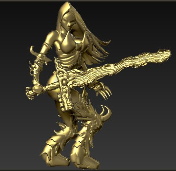
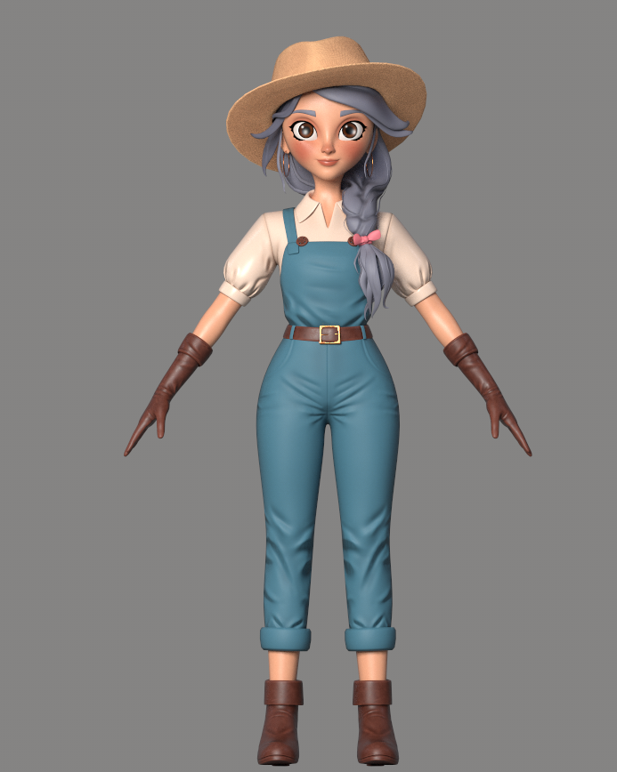

A stylized game-ready companion character, sculpted for a third-person adventure prototype. Built for real-time deformation and a readable silhouette at a distance.
Form is judged unlit first — if the silhouette and proportions hold in matcap grey, the materials are only adding truth, not covering weakness.

Edge loops concentrated at the shoulders, elbows and face to hold shape through the rig's full range of motion.
Unwrapped for minimal stretching across the face and joints, then painted with four PBR channels.

Rotate the model yourself — this is the same asset used in the render above, embedded live.